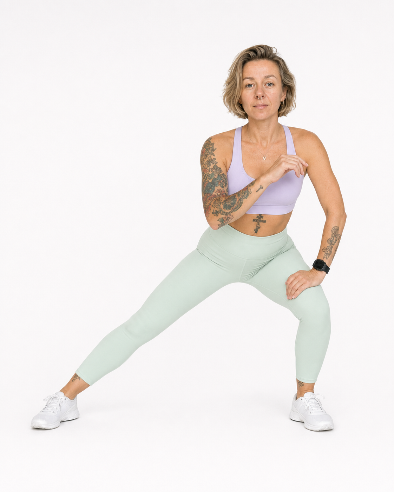

Меню дня
Курс на устойчивость

#sekta · GLP‑1
Вы пришли в правильное место
Нужно подставить: видео Оли
Вводный день
На терапии может меняться аппетит, насыщение, энергия и отношение к еде. А может не меняться так, как вы ожидали. Все эти ситуации нормальны для входа в курс.
Здесь мы коротко объясним, как устроены питание, тренировки и сопровождение, и поможем выбрать первый приоритет.
Не нужно делать всё сразуПеред стартом достаточно выбрать маршрут, прочитать безопасность, открыть меню и подготовить несколько знакомых продуктов.
Подготовить основу до первого дня
Маршрут меняет только первый приоритет и порядок чтения. Программа, меню и тренировочный календарь остаются общими.
Первый порядок для выбранного маршрута
БезопасностьКонтакт врачаПростая еда и вода
Выбрать ближайшую ситуациюТолько начинаю терапию
Прочитать карточку безопасностиСохранить медицинский маршрут и контакт назначившего специалиста.
Открыть меню и выбрать пять знакомых блюдОдин простой день, первая закупка и резерв без готовки.Нужно подставить стартовое меню
Выбрать один тренировочный вариантCARE или Strength — не оба одновременно.Нужно подставить финальный выбор и правила снижения нагрузки
Карточка безопасности
Остановить подбор меню или тренировку и обратиться за медицинской помощью по согласованному маршруту, если есть многократная рвота, невозможность пить или удерживать жидкость, признаки обезвоживания, сильная или нарастающая боль, предобморок, потеря сознания или возможная гипогликемия.
Курс не меняет препарат или дозу, не ставит диагноз и не предлагает продолжать нагрузку через острое состояние.
Нужно подставить медицинскую карточку и контактыВсё, что нужно до первого дня
Полная вводная остаётся здесь как справочник: маршрут, инструкция, безопасность, первый день питания и чек‑лист.
Три маршрута использования курса
1. Я только начинаю терапию
Что может быть важнее всего сейчас: понять назначение и схему наблюдения у врача, заранее подготовить простую еду и воду, заметить индивидуальные изменения аппетита и переносимости, не пытаться выполнять программу через выраженное недомогание.
Как использовать курс:
1. Сначала прочитать карточку безопасности и сохранить контакты назначившего врача.
2. Открыть готовое меню до первого дня и выбрать пять знакомых блюд, которые легко купить или приготовить.
3. Пройти первую неделю в режиме знакомства: одна тренировка по выбранному варианту, одно действие по питанию и один короткий check‑in в день.
4. Если аппетит ниже обычного, использовать подсказки по уменьшению объёма, разделению приёма пищи и переносимой текстуре. Если аппетит не снизился, не считать это ошибкой лечения и пользоваться базовым меню как ориентиром полноценности.
5. Вопросы о дозе, времени введения, взаимодействиях, выраженных симптомах и изменении самочувствия направлять врачу.
Результат первого этапа: участник знает, что может съесть без большого количества решений, как адаптировать знакомую еду и когда не продолжать самостоятельную адаптацию.
2. Я уже продолжаю терапию
Что может быть важнее всего сейчас: проверить достаточность и разнообразие рациона, не свести питание к нескольким переносимым продуктам, добавить регулярную силовую нагрузку и собрать систему, которая работает дома и вне дома.
Как использовать курс:
1. Заполнить личный профиль питания и провести аудит доступной еды дома, на работе и в дороге.
2. Использовать меню не как строгую диету, а как конструктор: выбрать белковую основу, источник энергии и другие переносимые компоненты.
3. Выбрать 3–5 удобных источников белка и связать питание с регулярными силовыми тренировками; не пытаться решать сохранение мышц только белком.
4. Каждую неделю добавлять один бытовой навык: закупку, заготовку, резерв без готовки, ресторанный сценарий или семейное масштабирование.
5. Обсудить с врачом или диетологом выраженное сужение рациона, необычно быстрые изменения веса, слабость, заболевания почек и другие состояния, требующие индивидуализации.
Результат курса: личная библиотека блюд, повторяемое меню, понятная закупка, силовой ритм и граница между бытовым вопросом и медицинской помощью.
3. Я вместе с врачом готовлюсь к снижению дозы или завершению терапии
Что может быть важнее всего сейчас: не рассматривать изменение терапии как экзамен на силу воли, заранее обсудить медицинский план, зафиксировать работающий рацион и подготовиться к возможному возвращению аппетита.
Как использовать курс:
1. Не менять дозу и не прекращать препарат по материалам курса; сначала согласовать план и наблюдение с назначившим специалистом.
2. Зафиксировать текущую базу: 12 повторяемых блюд, типичный ритм питания, два сценария закупки, два сценария заготовки и подходящий силовой план.
3. Подготовить варианты для обычного, усилившегося или заметно вернувшегося аппетита: увеличить полноценную порцию, добавить перекус или дополнительный приём пищи, а не терпеть голод до срыва.
4. Заранее определить, какие изменения веса, аппетита, гликемии, давления, симптомов или самочувствия нужно обсуждать с врачом и как часто будет проходить наблюдение.
5. Использовать поддержку куратора для организации еды, среды и возвращения к плану после сложного дня; медицинские решения остаются у врача.
Важная граница: навыки питания и движения поддерживают повседневную систему, но не заменяют фармакологический эффект и не гарантируют предотвращение возвращения веса. В расширении STEP 1 после прекращения семаглутида участники в среднем вернули значительную часть потерянного веса, поэтому изменение терапии требует не обещаний, а долгосрочного плана помощи.
Текст приветственного видео Оли · 5–7 минут
Здравствуйте. Я Оля, и я хочу начать не с правил, а с того, что мы понимаем вашу ситуацию. На терапии может меняться аппетит, насыщение, отношение к еде, энергия и скорость снижения веса. А может не меняться так, как вы ожидали. Вы можете только начинать, принимать препарат давно или вместе с врачом обсуждать следующий этап. Все эти ситуации нормальны для входа в курс.
Мы не будем оценивать вас по килограммам и не будем требовать одинакового темпа. Наша задача — помочь вам сохранить то, что важно для здоровья и качества жизни: достаточное питание, мышцы и силу, способность двигаться, понятный быт и спокойное отношение к изменениям.
В курсе есть три параллельные линии. Первая — питание: готовое меню, рецепты, замены, покупки и небольшие материалы, которые помогают применять всё это в реальном дне. Вторая — тренировки: в приоритете силовая работа, но нагрузку можно уменьшать, заменять прогулкой, мобильностью или отдыхом. Третья — сопровождение: куратор помогает выбрать следующий бытовой шаг, а медицинские вопросы направляет врачу.
Вам не нужно делать всё сразу. Перед стартом выберите свой маршрут, посмотрите карточку безопасности, откройте меню и подготовьте несколько знакомых продуктов. В течение курса достаточно возвращаться к одному следующему действию. Если вы пропустили день, не догоняйте и не удваивайте нагрузку — продолжайте с текущего дня.
И ещё одно важное правило. Курс не меняет препарат, дозу и назначения врача. Если вы только начинаете или готовитесь менять терапию, используйте курс как поддержку питания, движения и повседневной системы, а медицинский план составляйте с назначившим специалистом.
Как устроен курс
- Курс длится шесть недель. У каждой недели есть один образовательный фокус, готовое меню, практика питания, тренировки и поддержка.
- Меню открывается до начала недели. Его можно адаптировать заменой отдельных блюд; весь рацион пересобирать не нужно.
- В первый день недели участник отмечает, каким был аппетит по сравнению с обычным. Ответ меняет подсказки, но не назначает другой рацион.
- Для движения выбирается один тренировочный вариант. Не нужно выполнять одновременно CARE и Strength.
- Пропущенный день не требуется компенсировать. Следующее действие — открыть текущий день и выбрать выполнимый вариант.
- Куратору задаются вопросы о применении материалов, организации еды, замене блюда, возвращении к ритму и выборе облегчённой версии.
- Врачу направляются вопросы о дозе и препарате, взаимодействиях, анализах, выраженных симптомах, гипогликемии и существенных изменениях состояния.
Полная карточка безопасности
Остановить подбор меню или тренировку и обратиться за медицинской помощью по согласованному маршруту, если есть многократная рвота, невозможность пить или удерживать жидкость, признаки обезвоживания, сильная или нарастающая боль в животе, предобморок или потеря сознания, возможная гипогликемия, выраженное ухудшение самочувствия или другой острый симптом.
Связаться с назначившим специалистом, если питание длительно становится очень скудным, обычные дела сопровождаются выраженной слабостью, вес или аппетит меняются неожиданно быстро, побочные эффекты мешают выполнять назначения, либо участник планирует изменить дозу или прекратить терапию.
Курс не ставит диагноз, не меняет препарат или дозу, не интерпретирует анализы и не предлагает продолжать нагрузку через острое состояние. Сохраните контакт назначившего специалиста и согласованный порядок действий в острой ситуации.
Нужно подставить утверждённую медицинскую карточку и контактыВводное меню: один простой день
Это не обязательный рацион и не персональное назначение. Задача — показать четыре знакомые точки дня и дать основу для первой закупки.
- Завтрак: омлет или скрэмбл с овощами и хлебом. Замена без готовки — греческий йогурт или обогащённый соевый продукт с ягодами и овсяными хлопьями.
- Обед: курица, рыба, тофу или чечевица; гречка, рис или картофель; приготовленные овощи и подходящий соус.
- Перекус: творог, йогурт или соевый продукт с фруктом; при необходимости — ореховая паста или другой энергетически плотный компонент.
- Ужин: рыба, птица, тофу или бобовые; крупа или картофель; овощи с учётом переносимости.
Если аппетит ниже обычного, можно уменьшить объём, разделить блюдо на два приёма, выбрать более мягкую или влажную текстуру и начать с переносимого источника белка. Если аппетит обычный или заметно вернулся, базовый пример не является потолком: можно увеличить полноценную порцию, добавить гарнир, фрукт, перекус или ещё один приём пищи.
Первая закупка: яйца; один молочный или обогащённый растительный продукт; два источника белка на обед и ужин; две крупы или картофель и хлеб; 3–4 овоща; 2 фрукта или ягоды; подходящий жир или соус; один резерв без готовки или из морозилки.
Нужно подставить ссылку на менюЧек‑лист до первого дня · 8 шагов
- Выбрать ближайший маршрут использования курса.
- Посмотреть приветственное видео.
- Прочитать инструкцию и карточку безопасности.
- Сохранить контакт назначившего врача и понять, куда обращаться в острой ситуации.
- Открыть меню, выбрать пять знакомых блюд и один резерв.
- Сделать первую закупку на нужное количество порций.
- Выбрать один тренировочный вариант и подготовить место или оборудование.
- Решить, в какое время удобно открывать материал дня.
Можно переходить в программу
Незавершённые пункты останутся в подготовке — к ним можно вернуться позже.